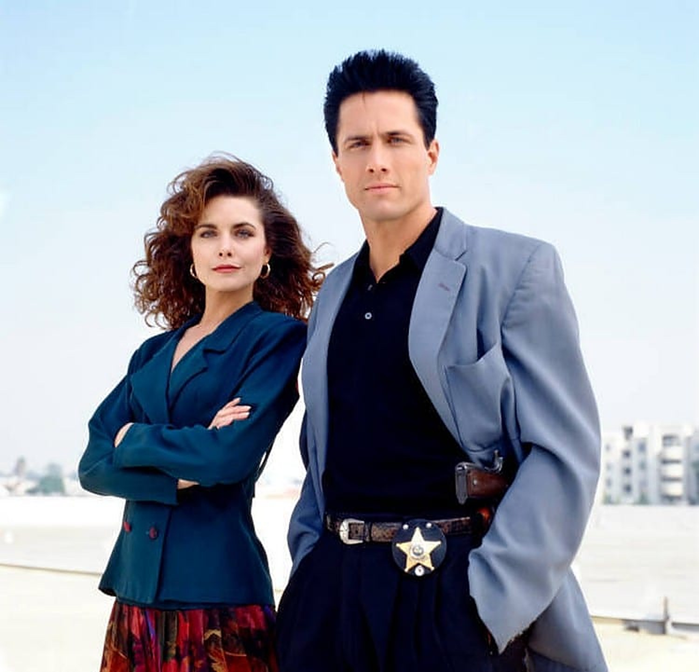
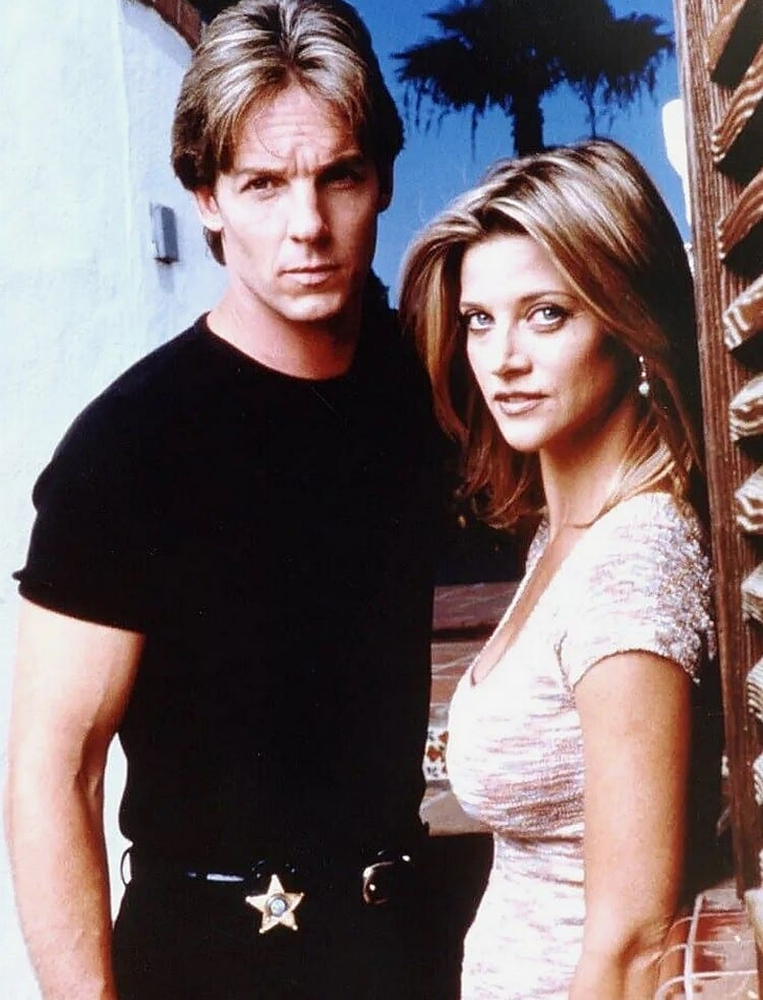
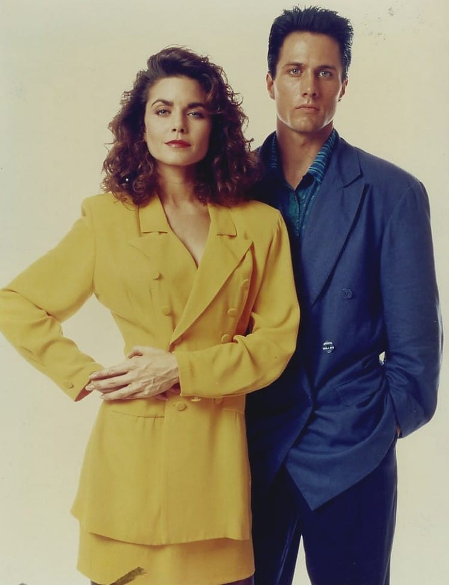

Les Dessous de Palm Beach, c'était sur TF1, le dimanche après-midi. J'avais une dizaine d'années.
Ce qui m'avait marqué d'abord, c'était le générique. Particulièrement sulfureux. Puis il y avait les deux enquêteurs, Lorenzo et Lance, un duo d'exception. Ce couple de policiers enquêtait sur les crimes les plus sordides dans les milieux huppés de Palm Beach, en Floride. Des crimes liés, le plus souvent, au sexe, à l'argent et au pouvoir.
J'ai revu quelques épisodes récemment, et la série est restée la même que dans mes souvenirs : une série policière aux scénarios bien ficelés, avec des personnages attachants, dans un décor magnifique. Bref, une série comme on n'en fait plus de nos jours.
Ce soir, on retourne à Palm Beach.

Rob Estes (Chris Lorenzo) et Mitzi Kapture (Rita Lance)
Les Dessous de Palm Beach, c'est Silk Stalkings en version originale. Une série policière américaine créée par Stephen J. Cannell. Deux détectives y enquêtent sur des « crimes passionnels » à caractère sexuel dans les milieux aisés de Palm Beach, en Floride. Un épisode dure 48 minutes.
Elle est d'abord diffusée sur CBS, du 7 novembre 1991 à juin 1993, dans la case de fin de soirée « Crimetime After Primetime ». USA Network prend ensuite le relais, de septembre 1993 jusqu'au final, le 18 avril 1999. Au total : 8 saisons et 176 épisodes.
Les deux enquêteurs sont les sergents Chris Lorenzo, joué par Rob Estes, et Rita Lee Lance, jouée par Mitzi Kapture. Ils tiennent les rôles principaux pendant les cinq premières saisons. Autour d'eux, Ben Vereen est le capitaine Hutchinson, dit « Hutch », et William Anton l'assistant du procureur George Donovan. Plus tard, Charlie Brill, en capitaine Harry Lipschitz, devient le visage le plus présent de la série : 129 épisodes.
Le thème musical est de Mike Post.
Silk Stalkings, c'est un jeu de mots sur « silk stockings », les bas de soie. Une série signée Stephen J. Cannell, produite par Stu Segall Productions et Cannell Entertainment, avec Stu Segall et David E. Peckinpah comme producteurs exécutifs.
Elle naît à la télévision de fin de soirée. CBS la lance le 7 novembre 1991 dans un bloc nocturne appelé Crimetime After Primetime. Quand CBS arrête l'expérience, en juin 1993, la série continue sur USA Network, où elle restera jusqu'au bout, en avril 1999.
L'histoire se passe à Palm Beach, mais la plupart des épisodes sont tournés à San Diego, en Californie, avec quelques-uns à Scottsdale, en Arizona.
Le duo central partage le premier rôle à égalité : Rob Estes et Mitzi Kapture sont co-vedettes de 1991 à 1995, avec un générique qui met l'un puis l'autre en avant, semaine après semaine. Rita raconte aussi une partie des enquêtes en voix off. Le ton mêle intrigues très sexuelles et touches d'humour, souvent portées par le capitaine Lipschitz et sa femme Frannie, jouée par Mitzi McCall, qui est aussi son épouse à la ville.
En 1995, Rob Estes quitte la série pour d'autres rôles, et Mitzi Kapture s'absente pour son premier enfant. De nouveaux enquêteurs prennent le relais, avant que Chris Potter et Janet Gunn ne s'installent en saison 6 et ne relancent l'intérêt du public.
USA annule la série en 1999, sur une fin laissée en suspens.

Chris Potter (Tom Ryan) et Janet Gunn (Cassy St. John)
Palm Beach, en Floride : ses villas, ses yachts, ses fortunes. Et derrière la façade, des crimes. Pas n'importe lesquels : des « crimes passionnels », liés au sexe, à l'argent et au pouvoir, commis dans les milieux les plus riches de la ville.
Pour les résoudre, la police met sur l'affaire deux sergents, Chris Lorenzo et Rita Lee Lance. Lui, c'est le coéquipier ; elle, une enquêtrice qui raconte aussi une partie des affaires en voix off. Épisode après épisode, ils plongent dans les secrets de ces familles fortunées, où chaque suspect a quelque chose à cacher.
Autour d'eux, un capitaine, un assistant du procureur, et un commissariat où l'humour n'est jamais loin. Mais entre deux affaires, on découvre aussi ce qui se cache derrière les deux enquêteurs.
Je m'arrête là.
Sous ses airs de série policière du dimanche après-midi, Les Dessous de Palm Beach repose sur une idée très précise : des enquêtes sur des « crimes passionnels » à caractère sexuel, dans le monde des ultra-riches. Le décor, les villas, les fêtes, les secrets de famille, font autant partie du programme que les affaires elles-mêmes.
Le cœur de la série, c'est le duo. Rob Estes et Mitzi Kapture sont co-vedettes à égalité, au point que leur nom alterne chaque semaine dans le générique. Et Rita raconte une partie des affaires en voix off, ce qui donne à la série un ton très personnel.
Le générique, justement. Ce montage de plans rapides, qui laisse deviner des scènes sexy et violentes, n'a pas été tiré des épisodes : selon Stephen J. Cannell, dans un bonus DVD, il a été conçu comme une promotion, tourné en une journée. Il n'empêche : c'est lui qui m'a marqué, et il a fait de la série ce qu'elle était pour un gamin de dix ans.
Au-delà des enquêtes, la série prend son temps avec ses personnages. Leur amitié devient une histoire, des cliffhangers terminent des saisons, et l'humour du capitaine Lipschitz et de sa femme Frannie allège le ton.
Mon avis : des scénarios bien ficelés, des personnages attachants, dans un décor magnifique. Une série comme on n'en fait plus.

Rob Estes (Chris Lorenzo) et Mitzi Kapture (Rita Lance)
Pourquoi Les Dessous de Palm Beach est-elle sortie de la mémoire collective ? Plusieurs pistes, que les faits permettent d'avancer.
D'abord, la série n'a jamais été une série de prime time. Elle naît sur CBS dans un bloc de fin de soirée, Crimetime After Primetime, qui s'arrête en juin 1993. Elle poursuit sa route sur USA Network, une chaîne câblée, pendant six saisons.
Ensuite, elle a perdu son duo. Rob Estes quitte la série en 1995, Mitzi Kapture s'absente, et les deux nouveaux enquêteurs que les fans n'ont jamais adoptés sont restés dans les mémoires comme la « lost cast ». Le couple formé par Chris Potter et Janet Gunn relancera l'intérêt du public, mais ce qui avait fait l'identité des débuts, le duo Lorenzo-Lance, ne revient pas.
Et puis la fin : en 1999, USA annule la série, sur un cliffhanger qui ne sera jamais résolu.
Enfin, sa seconde vie en vidéo a été fragile. Les DVD des saisons 1 à 5, sortis chez Anchor Bay entre 2004 et 2006, étaient épuisés en 2010. Il faudra attendre 2023 pour une sortie intégrale des huit saisons.
Alors oui, la série a disparu des écrans et des conversations. Mais quand je l'ai revue, elle était exactement comme dans mon souvenir : les scénarios, les personnages, le décor. Une série oubliée n'est pas une série qui a mal vieilli. C'est juste une série qu'on a arrêté de regarder.
Parce que c'est une série policière qui sait raconter. Des scénarios bien ficelés, des personnages attachants, et un fil rouge qui donne envie de rester : ce n'est pas qu'une enquête par épisode, ce sont aussi deux enquêteurs que l'on suit.
Parce que le duo fonctionne. Lorenzo et Lance, Rob Estes et Mitzi Kapture, partagent le premier rôle à égalité pendant cinq saisons, et leur histoire est le cœur de la série.
Parce que Palm Beach est un terrain de jeu idéal. Les villas, les fêtes, les fortunes, et derrière, des crimes de passion : le décor est aussi important que l'intrigue. Et il est magnifique.
Parce que Stephen J. Cannell a signé là sa série la plus longue, 176 épisodes en huit saisons, de 1991 à 1999, de quoi s'installer pour de bon.
Parce que l'humour du capitaine Lipschitz et de sa femme Frannie vient alléger le ton, juste ce qu'il faut.
Et parce que c'est une série comme on n'en fait plus. Quand je l'ai revue récemment, elle était restée la même que dans mes souvenirs. Il suffit de relancer un épisode, et c'est de nouveau un dimanche après-midi sur TF1.
Les Dessous de Palm Beach n'a pas fait date, et on ne la cite plus guère. Mais elle a duré huit saisons, 176 épisodes, de 1991 à 1999. Et elle m'a accompagné un dimanche après-midi sur TF1, quand j'avais une dizaine d'années.
Le générique sulfureux, Lorenzo et Lance, les crimes dans les milieux huppés de Palm Beach : tout est resté intact dans mon souvenir. Et quand je l'ai revue récemment, elle n'avait pas changé.
Des séries comme celle-là, on n'en fait plus. Alors relançons un épisode.
La cassette est dans le lecteur. On rembobine.
Titre original
Silk Stalkings
Pays
États-Unis
Genre
Policier · Drame
Diffusion
CBS, 1991–1993, puis USA Network, 1993–1999 (8 saisons, 176 épisodes)
Créateur
Stephen J. Cannell
Production
Stu Segall Productions · Cannell Entertainment
Musique
Mike Post (thème)
Fil conducteur
Séries TV cultes — EP. 12
SOMEDAY — SÉRIES EP. 12